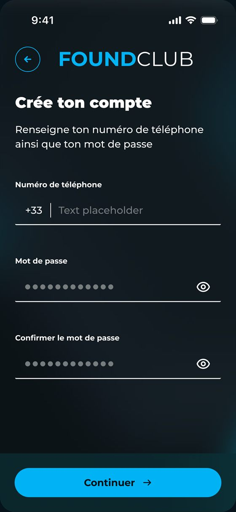
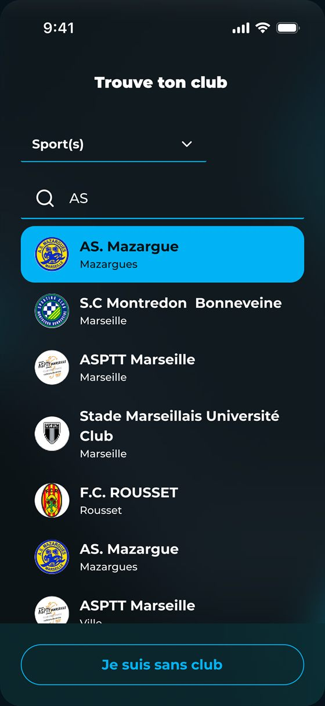
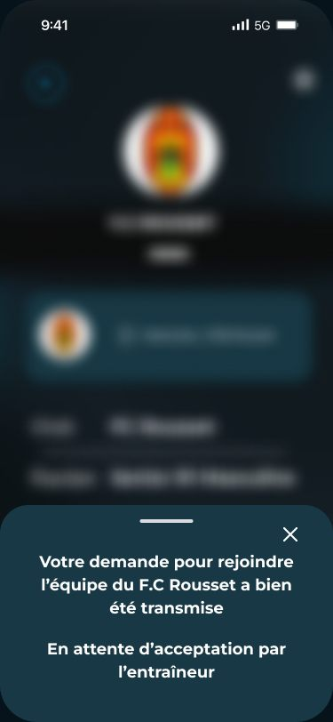

Étape 1
Créer le profil entraîneur et rejoindre un club
Le démarrage coach reste proche du joueur, mais l'objectif devient rapidement l'affiliation au club et à la bonne équipe.

Création du compte
Le coach crée son compte puis précise son rôle et son identité.

Recherche club
La recherche club sert de porte d'entrée avant la demande d'affiliation.

Validation par le club
Le club confirme ensuite l'entraîneur et le rattache à l'équipe concernée.